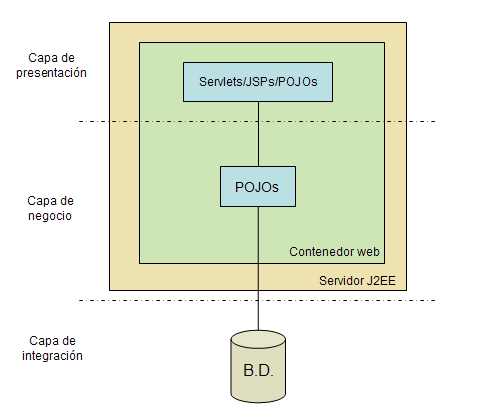
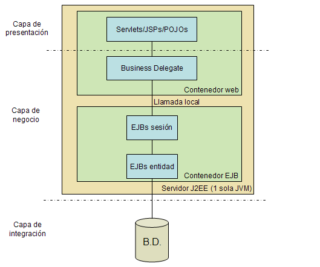
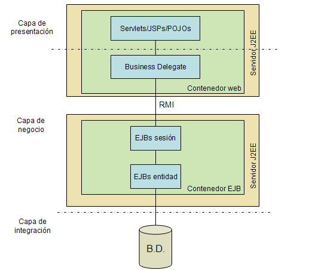
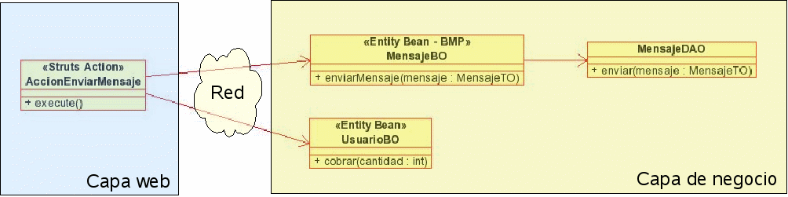
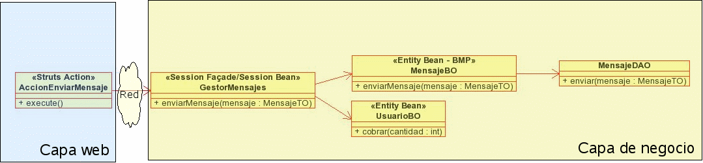
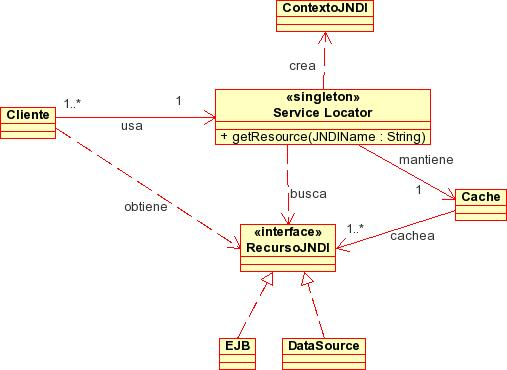

Charla 3: Patrones para aplicaciones distribuídas
- Patrones para aplicaciones distribuidas vs. aplicaciones "locales"
- Arquitecturas para aplicaciones enterprise
- Minimizando las llamadas remotas: Session Facade
- Transfiriendo datos a los clientes: Transfer Object
- Localizando servicios: Service Locator
- Haciendo transparentes los EJBs de negocio:Business Delegate
El segundo bloque del curso de especialista trata sobre aplicaciones enterprise, que pasan de usar un servidor web a un servidor de aplicaciones y de ser locales a poder distribuirse en varias máquinas gracias a tecnologías como los EJB. La experiencia de muchos desarrolladores con este tipo de aplicaciones ha demostrado que junto a la enorme potencialidad que ofrecen, también pueden presentar problemas de desarrollo y funcionamiento que se pueden evitar siguiendo un conjunto de "buenas prácticas". En esta charla veremos patrones de diseño específicos para aplicaciones enterprise, que sintetizan y codifican estas "buenas prácticas".
Patrones para aplicaciones distribuidas vs. aplicaciones "locales"
Como ya se ha comentado, dos son las características fundamentales de una aplicación enterprise frente a una aplicación web "convencional"
- La posibilidad de distribuir la aplicación en varias máquinas físicas y/o lógicas
- El uso de los servicios proporcionados por un servidor de aplicaciones
De las dos, la que tiene un impacto mayor sobre el rendimiento de la aplicación es la primera: estar ejecutando llamadas remotas entre objetos a través de la red incurre en costes que, si bien tomados de modo individual son pequeños (del orden de milisegundos) si no se gestionan eficientemente pueden dar lugar a enormes "cuellos de botella". Algunos de los patrones que veremos van destinados precisamente a solucionar este problema: organizar la aplicación de un modo eficiente para que el coste extra de las llamadas remotas tenga el menor impacto posible sobre el rendimiento. El caso prototípico es el del patrón session façade
Por otro lado, la "herramienta" estándar para el desarrollo de aplicaciones distribuidas en Java EE son los EJBs. Al menos hasta la versión 2, los EJBs han exigido del desarrollador el uso de determinados APIs, como JNDI para poder instanciar los objetos, y una forma específica de programar que permea también el código del cliente que accede a los EJBs. Algunos patrones van dirigidos a imponer buenas prácticas en estos contextos: una forma centralizada de acceder a objetos mediante JNDI (patrón service locator) y de ocultar al cliente que está accediendo a un EJB (patrón business delegate).
Arquitecturas para aplicaciones enterprise
Antes de ver los patrones, repasaremos de manera muy breve algunas de las características de la arquitectura de aplicaciones enterprise, ya que hay distintas opciones. Comenzaremos como punto de partida por una aplicación no-enterprise, para ver las diferencias.
Aplicaciones convencionales
Llamamos aquí así a las que no están distribuídas ni necesitan de un servidor de aplicaciones para ejecutarse, pudiendo funcionar en un servidor web java convencional que implemente el API de servlets.

Este, que es el modelo que hemos estado usando implícitamente en todos los desarrollos que hemos hecho hasta ahora, representa la opción más sencilla para la arquitectura de una aplicación Java EE, pero tiene una serie de limitaciones:
- El acceso de clientes no-web implica el tener que programar "a mano" usando APIs como RMI
¿Por qué EJBs?
Antes de empezar a discutir diferentes arquitecturas, conviene clarificar de forma breve algunos conceptos sobre EJBs que todavía no se han visto en profundidad en el curso. Básicamente, un EJB aporta un valor añadido al programador en el sentido de que el contenedor EJB (el servidor de aplicaciones) gestiona automáticamente el ciclo de vida de los objetos (creación y destrucción), el acceso remoto, la transaccionalidad, la seguridad y el multithreading. El programador no tiene que controlar estos aspectos en su código, ya que se configuran de forma declarativa.
Como veréis en el módulo correspondiente, los dos tipos más usados de EJBs son:
- De sesión: básicamente se usan para modelar los objetos de la capa de negocio. Donde en una aplicación convencional usaríamos clases java convencionales (POJOs) en una aplicación enterprise usaríamos EJBs, que exigen un API y una forma de programar determinadas, aunque el modelo de programación se ha simplificado mucho con la aparición de la versión 3 del estándar.
- De entidad: son objetos persistentes. En una aplicación enterprise desempeñarían un papel similar al que se le otorga a frameworks de persistencia como hibernate en aplicaciones convencionales.
Un aspecto muy importante de los EJBs es que posibilitan el acceso remoto a objetos, de modo que el código se puede distribuir entre varias máquinas, llamando unos objetos a otros. Esta capacidad abre la puerta a que podamos elegir si deseamos o no una arquitectura distribuída, con un coste de desarrollo asumible y que probablemente no lo sería si tuviéramos que programar las llamadas remotas de manera "manual", usando APIs como RMI.
Aplicaciones con EJBs locales
En esta arquitectura todos los EJBs siguen en la misma máquina virtual. A esto se le denomina en el estándar EJBs locales (posibles a partir de la versión 2.0 de la especificación). El uso de EJBs frente a POJOs en este caso se justifica por los servicios de gestión automática de transacciones, seguridad y multithreading.

Como se ve, la diferencia fundamental con respecto a las arquitecturas de aplicaciones que estamos empleando hasta ahora en el curso es que la capa de negocio está basada en EJBs, necesitando por tanto estar alojada en un contenedor de EJBs (en la práctica, en un servidor de aplicaciones). El patrón business delegate, como veremos posteriormente con más detalle, se emplea para aislar a la capa web de la de negocio, permitiendo que aquella permanezca sin cambios se pase a usar o no EJBs.
Como ventajas de esta arquitectura tenemos:
- El uso de EJBs locales hace la aplicación mucho más eficiente que con comunicaciones remotas.
- El desarrollador aprovecha los servicios del contenedor EJB para gestión de transacciones y otros.
- Se pueden usar EJBs de entidad con CMP, lo que simplifica el manejo de la persistencia.
Sus limitaciones son:
- Únicamente se sigue pudiendo acceder a través de clientes web
- El despliegue y prueba de la aplicación es más complejo que con POJOs. Los EJBs no se pueden probar fuera del contenedor EJB y es necesario desplegarlos cada vez que se recompilan.
- Todos los componentes deben estar dentro de la misma máquina.
Aplicaciones distribuidas con EJBs remotos
Esta se puede considerar la arquitectura J2EE "prototipo", cuyo esquema siempre figura en las introducciones a J2EE. Hay un contenedor web en el que reside la capa web y en otra máquina virtual Java está el contenedor EJB, donde se coloca la capa de negocio. El acceso desde la capa web a la de negocio se realiza mediante EJBs remotos. La capa de negocio será accesible también desde clientes no web a través de dichos EJBs.

Las ventajas de este modelo son:
- Se permite el acceso de clientes de distintos tipos que comparten la misma capa de negocio, ya que a los EJBs remotos se puede acceder desde el contenedor web, desde una aplicación Swing, etc...
- Se pueden distribuir los componentes en varias máquinas. Esto incrementa la escalabilidad potencial de la aplicación.
Por supuesto, esto es a cambio de ciertas contrapartidas:
- Es la arquitectura más compleja y la que requiere más recursos y tiempo de desarrollo. Por ello, salvo que los requerimientos exijan las capacidades únicas de esta arquitectura debería tenderse a modelos más simples.
- Las comunicaciones remotas entre la capa cliente y la de negocio comportan un coste considerable, ya que se hace un uso interno de RMI.
- Las aplicaciones distribuidas son las más complejas de desplegar y probar.
Minimizando las llamadas remotas: Session Facade
Problema
Supongamos que tenemos un modelo de dominio creado a base de beans de entidad, como el de la siguiente figura, en el que un cliente (en nuestro caso una acción de Struts) accede de manera directa a los objetos del modelo del dominio.

Esta forma de trabajar es problemática por varias razones:
- Desde el punto de vista lógico: ya hemos visto en módulos anteriores que una acción de Struts, o cualquier otro tipo de cliente de la capa de presentación no debe implementar nada de lógica de negocio, ya que no es su trabajo.
- Desde el punto de vista de costes: un caso de uso implica normalmente a más de un bean de entidad. Si el cliente tiene que acceder de manera remota a cada uno de estos beans de entidad, debe hacer múltiples llamadas a través de RMI con el alto coste que esto conlleva.
- Desde el punto de vista de la integridad transaccional: los beans de entidad son transaccionales por naturaleza, pero cada operación con un bean distinto se ejecutaría en una transacción separada. Podríamos usar JTA para agruparlo todo de manera manual, pero entonces se perdería parte del beneficio de los EJBs: el manejo automático y declarativo de transacciones.
Por tanto necesitamos algún mecanismo que nos permita: reducir la comunicación por la red, colocar la lógica de negocio de forma coherente y agrupar las operaciones en una única transacción declarativa.
Solución
Utilizar el patrón Session Facade. En este, los EJBs de sesión forman el "frontal" de la capa de negocio, ofreciendo un API de métodos al que pueden acceder los clientes. Para realizar sus operaciones, los EJBs de sesión llaman a los de entidad a través de su interfaz local, pasando a la situación de la siguiente figura, en la que se reduce el número de operaciones remotas. Los EJBs de entidad no son directamente accesibles por los clientes para evitar los problemas descritos anteriormente.

El session façade es un EJB de sesión para poder aprovechar los beneficios que nos dan los EJBs: acceso remoto transparente, transaccionalidad y seguridad declarativas y gestión automática del ciclo de vida.
Independientemente de la mejora de eficiencia, puede verse que este patrón es una implementación mediante un EJB de sesión del Facade del GoF, que se usa también en aplicaciones sin EJBs para centralizar la lógica de negocio.La única diferencia de implementación es que en aplicaciones convencionales la fachada es un POJO local y aquí, como hemos visto, es un EJB de sesión remoto.
Un problema práctico es cuántos Session Façades hay que definir en una aplicación. Lo más sencillo es definir uno solo, que contendría todo el API de la capa de negocio, pero este enfoque lleva a clases con demasiado código no relacionado entre sí. La práctica común es agrupar los casos de uso relacionados (que actúan sobre las mismas entidades) en un Session Facade propio.
Consecuencias
Entre las positivas:
- Reduce el número de comunicaciones por la red (en aplicaciones distribuidas)
- Promueve la separación entre lógica de negocio y de presentación, ya que el cliente se limita a delegar en el Session Facade para que él haga las operaciones.
- Asegura la integridad transaccional.
Como consecuencias negativas, un uso inadecuado del patrón puede llevar a:
- Crear beans de sesión con mucho código y difíciles de gestionar si no se tiene una disciplina clara para separar casos de uso.
- Dar demasiadas competencias al Session Facade, colocándole la lógica interna de objetos del dominio, que éstos deberían manejar por sí mismos.
- Duplicación de código común a varios casos de uso. Cuando se detecte este código debe sacarse fuera del Session Facade y colocarse en POJOs en la capa de negocio, formando un patrón Application Service, es decir, una capa auxiliar que contiene lógica de negocio.
Transfiriendo datos a los clientes: Transfer Object
Problema
Como ya hemos visto, una de las fuerzas fundamentales en una aplicación distribuida es reducir al mínimo las llamadas remotas. No obstante en una aplicación distribuida en algún momento habrá que transferir datos de una capa a otra. Buscamos la manera menos costosa de transferir información entre capas.
Solución
Realizar la transferencia de información entre capas empaquetada en objetos del tipo TO, Transfer Objects, que en su versión más sencilla son simplemente JavaBeans. Las operaciones serán mucho más eficientes con una única llamada que transfiera un paquete de información en lugar de con múltiples llamadas con datos individuales. Por supuesto, los TOs también se usan en aplicaciones no distribuidas, pero en este caso su uso está más justificado por cuestiones de organización de código (1 parámetro en lugar de varios) que por la eficiencia.
Aquí es donde podemos ver la justificación de por qué los TOs deben ser serializables: si la aplicación pasa de ser local a distribuida, los TOs van a viajar entre distintas JVMs . Aunque esta condición no sería estrictamente necesaria para una aplicación local, es muy fácil de seguir desde el principio y nos protege ante posibles cambios en la arquitectura.
Localizando servicios: Service Locator
Problema
En cualquier aplicación J2EE habrá componentes que necesiten acceder a recursos o servicios como DataSources de JDBC o colas JMS. Para usar estos recursos normalmente es necesario localizarlos primero a través de JNDI. Como los componentes que acceden a dichos recursos están dispersos por la aplicación, el código de localización también lo estará, lo que conlleva problemas de mantenimiento y legibilidad. Nuestro objetivo es proporcionar un "responsable centralizado" para localización de recursos JNDI.
Aplicabilidad
- Se necesita usar JNDI para acceder a recursos como EJBs, componentes JMS o DataSources JDBC.
- Se necesita encapsular las posibles dependencias de la implementación concreta de JNDI de que disponemos.
- Se quiere evitar una sobrecarga de trabajo innecesaria en la creación del contexto inicial JNDI y las llamadas de búsqueda de recursos.
Solución
Utilizar el patrón service locator para implementar y encapsular la búsqueda de recursos. El service locator esconde al cliente las posibles complejidades de la búsqueda, proporciona un API uniforme y puede mantener una cache para evitar llamadas innecesarias a JNDI. Normalmente no hará falta más de un service locator para toda la aplicación, por lo que se puede utilizar para su implementación el patrón singleton del GoF.
La siguiente figura muestra el diagrama de clases del patrón.

Como se ve, el Service Locator (que es un singleton) recibe solicitudes de los clientes para localizar recursos JNDI. Al inicializarse,el Service Locator crea un contexto inicial JNDI. Cada vez que recibe una solicitud de un recurso JNDI hace uso de dicho contexto. Mantiene además una Cache con los recursos ya solicitados para evitar peticiones JNDI innecesarias.
Consecuencias
Las consecuencias positivas son:
- Abstrae la complejidad: se encapsula el mecanismo de localización de servicios de modo que el cliente no necesita conocer los detalles.
- Proporciona un interfaz uniforme de acceso a recursos: que pueden usar todos los clientes y que abstrae de las posibles características propias de la implementación JNDI empleada.
- Mejora el funcionamiento de la aplicación: mediante la cache se evitan llamadas innecesarias a JNDI
Patrones relacionados
- Singleton (GoF): normalmente en una aplicación bastará con tener un único Service Locator, por lo que este patrón se suele implementar como un singleton.
- Data Access Object: un DAO normalmente utiliza un Service Locator para acceder a fuentes de datos JDBC.
- Business Delegate: en aplicaciones con componentes remotos utiliza un Service Locator para localizar servicios.
Haciendo transparentes los EJBs de negocio:Business Delegate
La principal razón de uso del Business Delegate es exactamente la misma que en aplicaciones sin EJB: ocultar la implementación de la capa de negocio. Esta idealmente no debería cambiar haya POJOs o EJBs en la capa de negocio.
En aplicaciones distribuidas hay que considerar además dónde reside físicamente el Business Delegate. Aunque desde el punto de vista lógico pertenece a la capa de negocio (y como tal deben ocuparse de él los desarrolladores de esta capa), desde el punto de vista físico se debe colocar en la capa de presentación para que las comunicaciones con los objetos de esta última sean locales. Los clientes que solicitan sus servicios no tienen por qué saber que estos son accedidos en realidad de forma remota. Esto abre una posible consecuencia negativa para el mal uso del patrón: que los desarrolladores de la capa de presentación olviden que los métodos de negocio son en realidad remotos y acaben haciendo un uso ineficiente y poco optimizado de las llamadas.